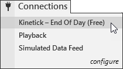

|
<< Click to Display Table of Contents >> Connecting to Kinetick - End Of Day (Free) |


|
Connecting to Kinetick - End Of Day (Free)
|
<< Click to Display Table of Contents >> Connecting to Kinetick - End Of Day (Free) |
|
Kinetick provides FREE end of day data for stocks, futures and forex. Real-time data service starts as low as $60 per month and you can qualify to have your CME Globex Futures exchange fees reduced with a qualified brokerage account. Please visit www.kinetick.com for more detailed information. |
 How to connect to Kinetick for FREE end of day data
How to connect to Kinetick for FREE end of day data
Connecting to KinetickThe Kinetick - End Of Day (Free) connection provides FREE end of day data for stocks, futures and forex. It is built into NinjaTrader and can be used directly out of the box with no additional steps. (Kinetick is not available for older versions of NinjaTrader 6.5 and earlier)
To connect to Kinetick for FREE end of day data: 1.Left mouse click on the Connections menu from the Control Center 2.Left mouse click on the Kinetick - End Of Day (Free) menu item

Please visit www.kinetick.com for information on signing up for real-time data. |